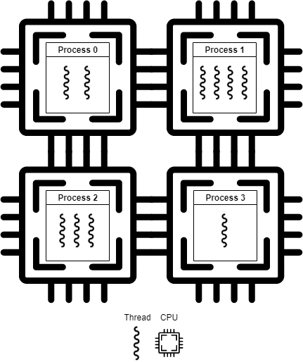

ARCHITETTURA degli ELABORATORI
APPUNTI
Argomenti del CORSO
I
- Storia degli elaboratori
GEN 0
GEN 1
GEN 2
II
- Rappresentazione dei Dati
SI
DGT
SNB
Bool
COD
III
- Circuiti Sequenziali e Combinatori
GEN 0
GEN 1
GEN 2
IV
- Organizzazione e Struttura di un Calcolatore
GEN 0
GEN 1
GEN 2
V
- Architettura della CPU
GEN 0
GEN 1
GEN 2
VI
- BUS e Comunicazione logica interna
GEN 0
GEN 1
GEN 2
VII
- Organizzazione e Accesso in Memoria
GEN 0
GEN 1
GEN 2
VIII
 - Multiprocessi, Multithread e CPU con multicore paralleli
GEN 0
GEN 1
GEN 2
Segnali Informativi
Digitalizzazione
Sistema Numerico Digitale
Algebra Booleana
Codifica dei DATI

 - Storia degli elaboratori
- Storia degli elaboratori  - Rappresentazione dei Dati
- Rappresentazione dei Dati  - Circuiti Sequenziali e Combinatori
- Circuiti Sequenziali e Combinatori  - Organizzazione e Struttura di un Calcolatore
- Organizzazione e Struttura di un Calcolatore  - Architettura della CPU
- Architettura della CPU  - BUS e Comunicazione logica interna
- BUS e Comunicazione logica interna